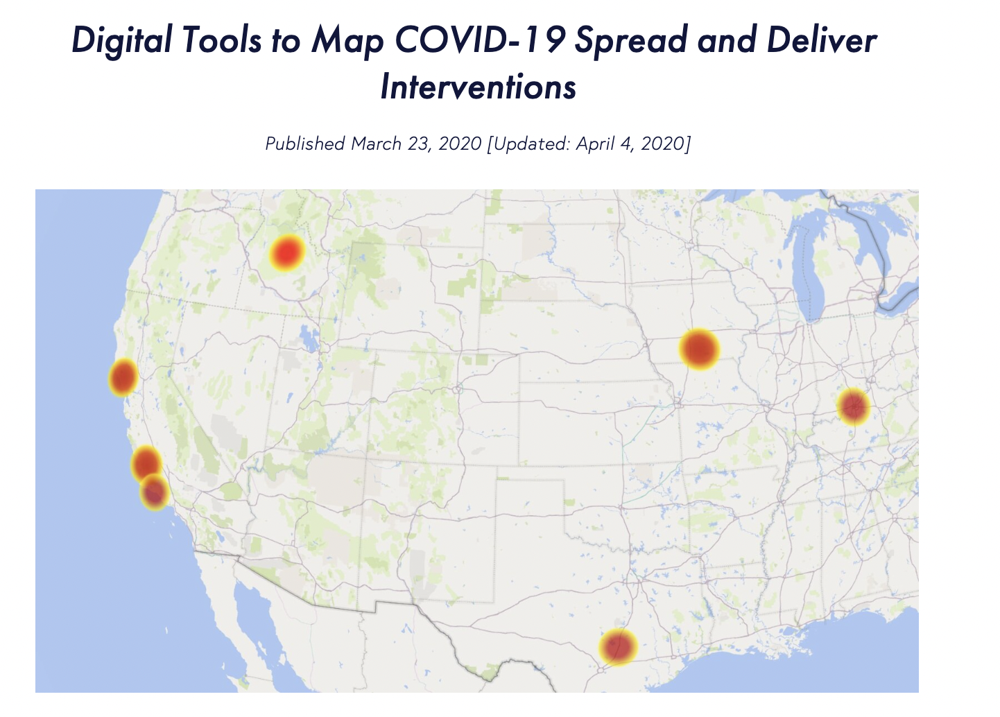

Public Democracy
Public Democracy is a NPO in US. They see digital advertising and personalized data as a means of understanding the society. They have applied that understanding to our work over the past decade with a wide array of civic, service, political, advocacy, and community building initiatives.
My Work
Improved the Digital Tool of Mapping COVID-19 Spread.
Improved the website with an interactive map to report the clustering, prevalence, and risk COVID-19 in the US, which has identified outbreaks in six locations across the US prior to any report.
Conducted researches about the social inequality and spread of misinformation in COVID.
Implemented the correlation and linear regression analysis of COVID-19 vaccination rate and racial makeup of communities in the US to find the racial inequality in healthcare, using Python and SQL. Used Web API to get vaccination hesitancy and anti-vaccination opinions on Facebook and Twitter, built a dataset and analyzed the effects of misinformation on the vaccination rate.